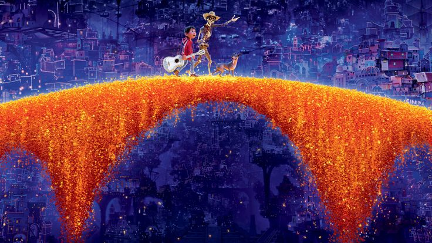

How Coco connects culture, memory, and family across generations.
✿✦✿✦✿

A bridge between two worlds
FILM / 2017
More than a celebration.
Coco follows Miguel as he discovers that family stories and memories can connect the living with those who came before them.
HOVER OVER THE IMAGES TO EXPLORE
✿♫✿♫✿
✿✦✿✦✿
01 / THE MOVIESCOCO — 2017
A little closer, across generations.
Día de los Muertos · Mexico
WHERE
Mexico and Mexican communities around the world
WHEN
Traditionally observed on November 1 and 2
A celebration of memory
Coco is inspired by Día de los Muertos, a Mexican tradition that honors family members and loved ones who have died. Families may create ofrendas with photographs, candles, flowers, food, and personal objects. These altars help keep memories and family stories present.
Love that stays
The relationship between Miguel and his great-grandmother, Mamá Coco, gives the story its emotional center. The song “Remember Me” changes meaning as the film unfolds: what first sounds like a performance becomes a quiet reminder of love. Music helps Miguel reconnect with his family's past.
A bridge between worlds
The marigold bridge is a visual symbol of connection. It links the living and the dead, just as family traditions link one generation to another. The film suggests that although people may be gone, their stories can remain part of who we are.
“To remember someone is to keep a part of them with us.”
Autumn reminds us that everything changes. Coco reminds us that love and memory can continue through the stories we share.
✿♫✿♫✿
✿✦✿✦✿
03 / CULTURE IN CELEBRATIONDÍA DE LOS MUERTOS
BEYOND THE FILM
A celebration full of life.
Skulls, food, and traditions in Mexico
Why are skulls everywhere?
During Día de los Muertos, skulls are not meant to be frightening. They are reminders that death is a natural part of life, and that loved ones remain part of a family's story. Sugar skulls, called calaveras, are often decorated with bright colors and patterns.
The meaning of skull makeup
People paint their faces with colorful skull designs, often inspired by calaveras and the image of La Catrina. The makeup can be a creative way to honor the dead, celebrate Mexican culture, and show that remembrance can be joyful as well as emotional.
Food brings everyone together
Families prepare favorite dishes and traditional foods to share during the celebration. Pan de muerto, a soft sweet bread often decorated with bone-shaped pieces, is one of the best-known foods. Sugar skulls, tamales, fruit, and other family favorites may also be enjoyed.
A city-wide celebration
Mexico City's Día de los Muertos parade fills the streets with music, giant skeleton figures, elaborate costumes, and face-painted performers. The modern parade is a public celebration that brings the imagery and spirit of the holiday into the heart of the city.
A celebration that remembers life, not just death.
Coco brings this colorful world to the screen, while real celebrations show how traditions continue to grow and bring communities together.